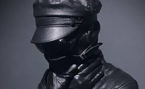
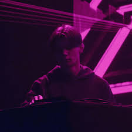
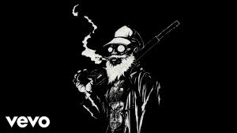

Mick Kenney, conocido artísticamente como “Kordhell”, es un músico,cantante,productor,
compositor,actor,artista y productor británico-estadounidense proveniente de Birmingham, Reino Unido.
Ejemplo de audio

DVRST
Valeriy Zaytsev más conocido por su nombre artístico como DVRST , es un DJ y productor
ruso de música alternativa, independiente, dance, electrónica y pop.
Ejemplo de audio

FREDDIE DREDD
Ryan Mitchel Chassels conocido profesionalmente como Freddie Dredd, es un rapero, cantante,
productor y compositor canadiense, mejor conocido por combinar sonidos ásperos de baja fidelidad
Ejemplo de audio

PLAYAMANE
Playamane es un famoso artista argentino, ingeniero de sonido y personalidad de internet
salto a la fama en abril de 2022 luego de su lanzamiento de Midnight